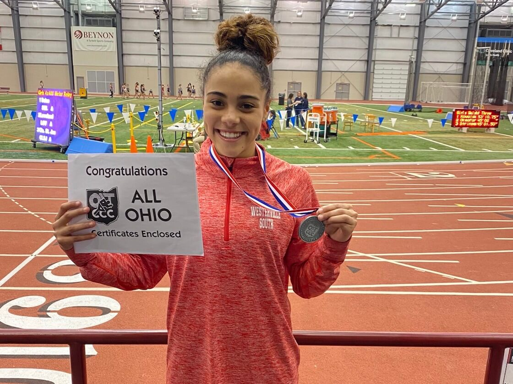
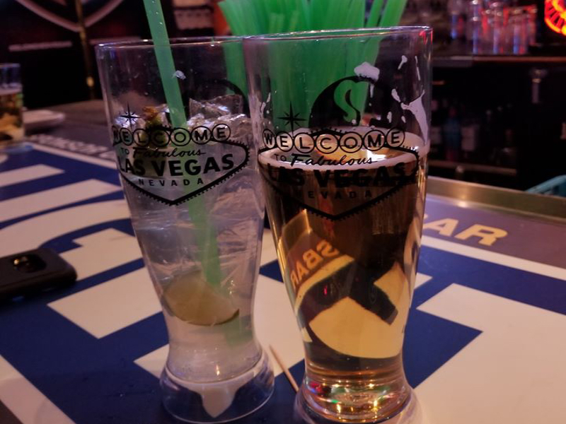

The Hurdle Queen
Marissa ran in the Divion 1 indoor state championships and placed second in the 60H. Read about the Hurdle Queen and her indoor season below.
After a successful middle school career, Marissa was really excited for the summer track season and freshman year. Training with coach Jordan Rispress of the Ohio Speed Academy, Marissa felt that she was ready to take the next step in her journey. The hard work paid off and she won two USATF Ohio State championships*, three USATF Region 5 championships, and made it to the USATF National Junior Olympic Track & Field Championships in Sacramento, CA. There Marissa earned All-American honors in the 100m and 200m hurdles by placing 5th and 3rd respectively. Bolstered by the success at Nationals, she ran indoor for Westerville South to get a head start on the 2020 outdoor season. Marissa improved her technique each meet, lowered her PRs and was the only freshman to qualify for the OATCCC Division 1 Indoor Championships. She won her heat to move into the final where she was edged out at the line by a more experienced runner. Marissa's performance earned her All-Ohio status. Watch the race here.
The football recruiting process officially began for Kaden when he was invited to attend a junior day at the University of Texas on January 19, 2019. He didn't walk away with an offer but he did come away with more insight into what big-time college football prospects looked like. Kaden dedicated himself to getting bigger, stronger, and faster by strength training with former Ohio State Buckeye head strength coach, Eric Lichter, at Plus 2 in Columbus. His first official offer came from Coach Mark Dantonio of the Michigan State Spartans less than a month after leaving Austin. Since then, Kaden has received scholarship offers from a number of outstanding schools including the three most recent: Minnesota, Arizona State, and TCU. He has taken unofficial visits to all of the schools except Nebraska, Minnesota, Louisville, TCU, and Arizona due to the quarantine caused by Covid-19. As soon as we are free to travel, Kaden and his mother or I will travel to see these schools. He is looking forward to more amazing experiences like this whiteout game in Happy Valley.

After two years at Colgate University in frigid Hamilton, NY, McKenna decided to transfer to Ohio State so she could pursue the exact degree in psychology that she wanted. With the decision made, she had to endure the nerve-wracking process of applying to college for a second time. Shortly after she received her acceptance email to The Ohio State University, the country was flipped on its head by Covid-19. In fact, McKenna was on her way home when she received word that all students were being sent home for the rest of the year and that all courses would continue online. She turned around in Syracuse, drove back to Hamilton, spent the night partying with her girls, and drove home the next day. Since she got back home, McKenna got a job to earn money for her first apartment which she will move into at the beginning of June. She will have two roommates but this place is definitely nicer than the first apartment that Sheila or I lived in. Most recently, she got hired at Ohio State University Hospital which means that her college expenses will be covered by the university. Sheila and I love that!
This past Christmas, I had a present to open from Sheila despite our having said that we weren't getting gifts for each other. Like her mother, she likes to make opening gifts into a game and so I had to put together a puzzle. After successfully completing the puzzle, I learned that Sheila had booked us a trip to Las Vegas for our 20th anniversary in January. We arrived in Vegas on a Friday evening, checked in at the Luxor and walked the strip a little before heading to bed as we had an busy day on Saturday. After a big brunch at the buffet including probably 10 mimosas, we headed out for the Nathan Burton Magic Show which was outstanding. In fact, I still puzzle over how he did some of his tricks. Sheila and I ate a Brazilian Steakhouse called Pampas for dinner and drinks. We were supposed to watch the UFC fight between Connor McGregor and Cowboy Cerrone but didn't get in the bar early enough. This turned out to be a good thing because the fight ended in less than a minute. We ended the night watching an adult hypnotist and heading back to the hotel. The rest of the trip was busy as we passed our time visiting buffets, watching the Cirque de Soleil production called Run (it was awful), attending a comedy show called the Hilarious 7 and losing money at the poker table. It was a great trip...we definitely need to get away by ourselves more often.
